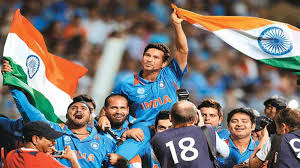
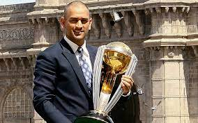
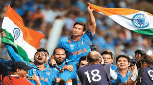
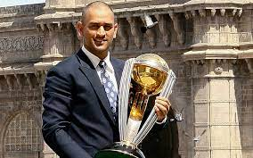

Ending The 28 Year Hurt
Brought up as a child on Kapil Dev’s glories, Tendulkar was very aware that this [the 2011 World Cup] was his last chance to win what he saw as ‘cricket’s ultimate prize’. He gathered the Indian team together and told them that each of them must pledge to sacrifice something for the World Cup. How about losing three kilograms in weight? The players who were never likely to say no to Tendulkar, at least not to his face, instantly promised. Tendulkar lost 3.8 kilograms as he got fit to fulfil what was his last great cricket mission.
The opening match in Mirpur was against Bangladesh. Sehwag made 175 from 140 balls. In some ways even more telling was Virat Kohli, who had already made his mark in one-day internationals but now, making his World Cup debut, outscoring Sehwag, and getting to his hundred in eighty-three balls, 11 fewer than Sehwag. India’s 370 proved too much.
The next match against England in Bengaluru was one of the most remarkable matches of the tournament. With Tendulkar scoring his fifth World Cup century, India seemed odds on to win but in the end just managed to tie the match, showing a number of frailties. The top order had not supported Tendulkar, the bowling could be taken apart and the fielding did not suggest many in the team had taken Tendulkar’s advice and shed 3 kilograms of weight. However, India improved as the tournament progressed. There were hiccups: India lost to South Africa in the Group stage, despite Tendulkar hitting another World Cup century—his ninety-ninth in all international cricket. India should have made more than 296 and also failed to close out the match.
What was encouraging for the Indians was the way Yuvraj Singh was having a second coming. Yuvraj won Man of the Match awards against Ireland, the Netherlands, West Indies and, perhaps, most crucially, in the quarter final against Australia. A Ponting hundred had set India 261. When the fifth wicket fell India still needed 74. Yuvraj, partnered by Suresh Raina, who was also making his comeback in the tournament, batted with such calmness that India won without losing another wicket. Australia, who had won all three previous World Cups, had been eliminated.
This set up the semi-final against Pakistan which was always going to be more than just a cricket match. Even by the standards of hype that India–Pakistan matches generate, this was exceptional. With this, the first match in the subcontinent between the two countries since the terrorist attack on Mumbai by Pakistan-based terrorists, the match was a vehicle for diplomacy.
India, on winning the toss, batted and made 260 for 9. Tendulkar made 85, largely helped by Pakistan’s fielders. He was dropped four times— each effort by the Pakistani fielders more comical than the previous one. Pakistan got to 103 for 2 and even in the forty-second over were in with a shout at 184 for 7. But then Afridi tried to hit Harbhajan out of the ground, was caught and the rest fell apart. India won by 29 runs and maintained their record of never having lost a World Cup match to their neighbours.
The match began with the sort of drama that suggested the script had been written by a comedian. As the coin was spun Kumar Sangakkara, the Sri Lankan captain, called. The coin came up as heads, but the match referee did not hear the call over the crowd. It was decided that there would be a re-toss. Sangakkara called heads as the coin was spun the second time. It was heads and he elected to bat. For long periods in the Sri Lankan innings, India were in control. But with Sri Lanka 182 for 5, Jayawardene stepped up, making 103 not out and Sri Lanka finished on 274. World Cups are normally won by teams batting first. At this stage, only two teams had won chasing—and to win, India would have to score more runs than any chasing team had ever done in a final.
India could not have had a worse start. Sehwag was lbw for a duck to the second ball of the innings. Tendulkar raced to 18 off fourteen balls, but to the dismay of everyone, he went for a big drive off Malinga and edged a catch to Sangakkara. Kohli and Gambhir started the recovery, taking India to 114 before Kohli was caught-and-bowled by Dilshan for 35. And this is when Dhoni made the most dramatic decision of the final.
He had decided that with Sri Lanka having two off-spinners, Muralitharan and Suraj Randiv, whom he knew well from Chennai Super Kings, he would face fewer problems than other Indian batsmen. For a start, he could pick their doosra. Dhoni was also aware that there was dew on the ground and if he got hold of the Sri Lankan spinners, he could dictate the game. He discussed this with Kirsten who agreed. So, as Kohli walked back to the pavilion, instead of Yuvraj who had batted No. 5 or even higher throughout the tournament out strode Dhoni. From the start of his innings, Dhoni set out to prove why he was called the best finisher of a one-day game. Gambhir and he added 109 for the fourth wicket. When Gambhir was bowled, the target was in sight, with India needing 52 runs off fifty-two balls. Yuvraj now joined him, and as Sri Lanka started the last two overs the finish line had come into view. Four runs were needed off eleven balls. For Dhoni this was the moment to finish the match in the classic way he had often done as a boy in Ranchi. As Kulasekara bowled the second ball of his eighth over, Dhoni bent his right leg, braced his left knee and with an extension of his forearms hit the ball high and wide over long-on. It was 10.49 p.m. Dhoni had not planned to finish the match with a six. The ball was there and he hit it. The shot became one of the most memorable in history.
After India had beaten Bangladesh, Dhoni had told Kirsten, “Keep the champagne ready, we will uncork it in Wankhede.” Now it was uncorked as the Indians held up the Cup. What followed could have been choreographed by a Bollywood director
Kohli lifted Tendulkar on his shoulders, saying, “If we do not lift him on our shoulders tonight, when will we? He has carried the burden of the nation for 21 years. It is time we carried him on our shoulders” and carried him around Wankhede. The picture that would go around the world showed Tendulkar on Kohli’s shoulders looking skywards as he holds the Indian flag aloft. Harbhajan with tears in his eyes is next to him and also carrying an Indian flag. Dhoni in a sleeveless shirt, wearing a cap, is looking so anonymous that you have to look very hard at the picture to make out he is there. There is nothing to suggest in that picture that he has captained this side to the World Cup and hit the six that won the trophy all of India had been seeking since 1983.